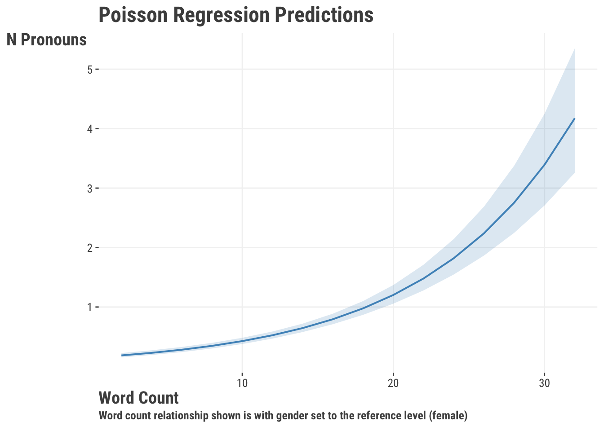

4 Generalized Linear Models
What happens when your target variable isn’t really something you feel comfortable assuming is ‘normal’? Maybe you’ve got a binary condition, like good or bad, or maybe you’ve got a count of something, like the number of times a person has been arrested. In these cases, you can use a linear regression, but it often won’t do exactly what you want. Instead, you can generalize your approach to handle these scenarios.
Generalized linear models exist to map different distributions into linear space. This allows us to use the same linear model framework that we’ve been using, but with different types of data. These models generalize the linear model to incorporate different distributions of the target variable, while still using the same framework.
4.1 Key Ideas
- A simple tweak to our previous approach allows us to generalize are linear model to account for other settings.
- Common distributions such as binomial, poisson, and others can often do better for us both in terms of model fit and interpretability.
- Getting familiar with just a couple distributions will allow you to really expand your modeling repertoire.
4.1.1 Why this matters
The linear model is powerful on its own, but even more so when you realize you can extend many other data settings, some of which are implicitly nonlinear! When we want to classify observations, count them, or deal with proportions and other things, simple tweaks of our standard linear model allow us to handle such situations.
4.1.2 Good to know
Generalized linear models are a broad class of models that extend the linear model to different distributions of the target variable. In general, you’d need to have a pretty good grasp of linear regression before getting too carried away here.
4.2 Distributions & Link Functions
Remember how linear models really enjoy the whole Gaussian, i.e. ‘normal’, distribution scene? The essential form of the linear model can be expressed as follows:
\[ \mu = \alpha + X\beta \] \[ y \sim \textrm{Normal}(\mu,\sigma) \]
But not all data follows a Gaussian distribution. Instead, we often find some other distribution would be appropriate, so we need a way to incorporate different distributions of the target into our model. Distributions cannot do it alone! We also need a link function to connect the linear model we’ve been using to the distribution we want to apply.
From a theoretical perspective, link functions are tricky to get your head around.
- Find the exponential of the response’s density function and derive the canonical link function…
From a conceptual perspective, all they are doing is allowing our linear combination of feature to “link” to a distribution function’s mean or other parameters. If you know a distribution’s ‘canonical’ link function, that is all the deeper you will probably ever need to go. At the end of the day, these link functions will convert the target to an unbounded continuous variable. The take-away here is that the link function describes how the mean is generated from the (linear) predictor.
4.3 Logistic Regression
As we’ve seen elsewhere, you will often have a binary variable that you might want to use as a target – it could be dead/alive, lose/win, quit/retain, etc. You might be tempted to use a linear regression, but you will quickly find that it is not the best option if you’re interested in the probability of one category versus the other. So let’s try something else.
4.3.1 The Binomial Distribution
Logistic regression is different than linear regression mostly because instead of that nice continuous target, we are dealing with a target that takes the form of a binary variable, one that we often assume comes from a binomial distribution. The binomial distribution doesn’t have the \(\mu\) or \(\sigma^2\) like the Gaussian - instead we have p and n, where p is a probability and n is the number of trials. We tend to talk about p with regard to the probability of a specific event happening (heads, wins, defaulting, etc.).
Let’s see how the binomial distribution looks with 100 trials and probabilities of “success” at p = .25, .5, and .75:
If we examine the distribution for a probability of .5 in Figure 4.1, we will see that it is centered over 50 - this would suggest that we have the highest probability of encountering 50 successes if we ran 100 trials. Shifting our attention to a .75 probability of success, we see that our density is sitting over 75. In practice we probably end up with something around that value, but on average and over repeated runs of 100 trails, the value would be \(p\cdot n\).
Since we are dealing with a number of trials, it is worth noting that the binomial distribution is a discrete distribution. If we have any interest in knowing the probability for a number of successes we can use the following formula:
\[P(x) = \frac{n!}{(n-x)!x!}p^xq^{n-x}\]
While we don’t need to dive into finding those specific values for the binomial distribution, we can spend our time exploring how it looks in linear model space:
\[ \textrm{logit}(p) = \alpha + X\beta \]
\[y \sim \textrm{Binomial}(n, p) \\ \]
The logit function is defined as:
\[\textrm{log}\frac{p}{1-p}\]
We are literally just taking the log of the odds (the log odds becomes important later).
Now we can map this back to our model:
\[\textrm{log}\frac{p}{1-p} = \alpha + X\beta\]
And finally we can take that logistic function and invert it (the inverse-logit function) to produce the probabilities.
\[p = \frac{\textrm{exp}(\alpha + X\beta)}{1 + \textrm{exp}(\alpha + X\beta)}\]
or equivalently:
\[p = \frac{1}{1 + \textrm{exp}(-(\alpha + X\beta))}\]
Whenever we get coefficients for the logistic regression model, we are always going to get them as log odds, but usually we exponentiate them to get the odds ratio. For example, if we have a coefficient of 1.5, we would say that for every one unit increase in the predictor, the odds of the target being a “success” increase by 1.5 times.
4.3.2 Probability, Odds, and Log Odds
Probability lies at the heart of all of this, so let’s look at the relationship between the probability and log odds. In our model, the log odds are the linear combination of our features. Let’s say we have a model that produces those values. We can then convert them from the linear space to the (nonlinear) probability space with our inverse-logit function.

This is the classic logistic function, where we can see that the probability of success approaches 0 when the log odds are negative and approaches 1 when the log odds are positive. The main message here is that we can take a bounded variable in probability and transformed it to continuous space, and vice versa.
4.3.3 A Preliminary Model
We are going to return to our movie review data and we are going to use rating_good as our target. Before we get to modeling, see if you can find out the frequency of “good” and “bad” reviews. We will use word_count and gender as our features. Before we move on, though, find the probability of getting a “good” review.
df_reviews = read_csv("data/movie_reviews.csv")
X = df_reviews |>
select(word_count, male = gender) |>
mutate(male = ifelse(male == 'male', 1, 0)) |>
as.matrix()
y = df_reviews$rating_goodimport pandas as pd
import numpy as np
df_reviews = pd.read_csv("data/movie_reviews.csv")
X = (
df_reviews[['word_count', 'gender']]
.rename(columns = {'gender': 'male'})
.assign(male = np.where(df_reviews[['gender']] == 'male', 1, 0))
)
y = df_reviews["rating_good"]For an initial logistic regression model, we can use standard and common functions in our chosen language.
model_logistic = glm(
rating_good ~ word_count + gender,
data = df_reviews,
family = binomial
)
summary(model_logistic)
Call:
glm(formula = rating_good ~ word_count + gender, family = binomial,
data = df_reviews)
Coefficients:
Estimate Std. Error z value Pr(>|z|)
(Intercept) 1.71240 0.18136 9.442 <2e-16 ***
word_count -0.14639 0.01551 -9.436 <2e-16 ***
gendermale 0.11891 0.13751 0.865 0.387
---
Signif. codes: 0 '***' 0.001 '**' 0.01 '*' 0.05 '.' 0.1 ' ' 1
(Dispersion parameter for binomial family taken to be 1)
Null deviance: 1370.4 on 999 degrees of freedom
Residual deviance: 1257.4 on 997 degrees of freedom
AIC: 1263.4
Number of Fisher Scoring iterations: 4import statsmodels.api as sm
import statsmodels.formula.api as smf
model_logistic = smf.glm(
'rating_good ~ word_count + gender',
data = df_reviews,
family = sm.families.Binomial()
).fit()
model_logistic.summary()| Dep. Variable: | rating_good | No. Observations: | 1000 |
| Model: | GLM | Df Residuals: | 997 |
| Model Family: | Binomial | Df Model: | 2 |
| Link Function: | Logit | Scale: | 1.0000 |
| Method: | IRLS | Log-Likelihood: | -628.70 |
| Date: | Sat, 30 Mar 2024 | Deviance: | 1257.4 |
| Time: | 13:56:34 | Pearson chi2: | 1.02e+03 |
| No. Iterations: | 4 | Pseudo R-squ. (CS): | 0.1068 |
| Covariance Type: | nonrobust |
| coef | std err | z | P>|z| | [0.025 | 0.975] | |
| Intercept | 1.7124 | 0.181 | 9.442 | 0.000 | 1.357 | 2.068 |
| gender[T.male] | 0.1189 | 0.138 | 0.865 | 0.387 | -0.151 | 0.388 |
| word_count | -0.1464 | 0.016 | -9.436 | 0.000 | -0.177 | -0.116 |
4.3.4 Interpretation and Visualization
We need to know what those results mean. The coefficients that we get from our model are in log odds. We can exponentiate them to get the odds ratio, but we can also exponentiate them and divide by 1 + that value to get the probability. Interpreting log odds is a fool’s errand, but we can at least get a feeling for them directionally. A log odds of 0 would indicate no relationship between the feature and target. A positive log odds would indicate that an increase in the feature will increase the log odds of moving from “bad” to “good”, whereas a negative log odds would indicate that a decrease in the feature will decrease the log odds of moving from “bad” to “good”. We can convert those log odds to help make some more sense from them.
When we exponentiate the log odds coefficients, we are given the odds ratio. This is the ratio of the odds of the outcome (i.e., success from our binomial distribution) occurring for a one unit increase in the feature.
| Parameter | Coefficient | Exp. Coef |
|---|---|---|
| (Intercept) | 1.71 | 5.54 |
| word_count | −0.15 | 0.86 |
| gendermale | 0.12 | 1.13 |
Fortunately, the intercept is easy – it is the odds of a “good” review when word count is 0 and gender is “female”. We see that we’ve got an odds ratio of 0.86 for the word count variable and 1.13 for the male variable. An odds ratio of 1 means that there is no change in the odds of the outcome occurring, that the feature does not influence the target. An odds ratio of less than 1 means that the odds of the outcome’s chosen class occurring decreases as the feature increases. An odds ratio of greater than 1 means that the odds of the outcome occurring increase as the feature increases.
It is more intuitive to interpret the probability, so we’ll get predicted probabilities for different values of the features. The way we do this is through the (inverse) link function, which will convert our log odds of the linear predictor to probabilities (?fig-fig-graph-logreg). We can then plot these probabilities to see how they change with the features.

In Figure 4.3, we can see a clear negative relationship between the number of words in a review and the probability of being considered a “good” movie. As we get over 20 words, the predicted probability of being a “good” movie is less than .2. We also don’t see much difference between male and female ratings. Note that in both cases, we’re getting predictions for one feature while the other feature is held at zero or its reference level.

4.3.5 Objective Function & Model Fitting
Let’s see how we can pick that work apart to create our own functions to help us demystify the process. We can use maximum likelihood estimation to estimate the parameters of our model, which is the approach used by standard package functions. Feel free to skip this part if you only wanted conceptual, but for even more information on maximimum likelihood estimation, see Section 3.7 where we take a deeper dive into the topic and with a similar function. The following code is a simple but effective version of what goes on behind the scenes with ‘glm’ type functions.
my_glm = function(par, X, y, family = "binomial") {
# add an column for the intercept
X = cbind(1, X)
# Calculate the linear predictor
mu = X %*% par # %*% is matrix multiplication
# get the likelihood for the binomial or poisson distribution
if (family == "binomial") {
# Convert to a probability ('logit' link/inverse)
p = 1 / (1 + exp(-mu))
L = dbinom(y, size = 1, prob = p, log = TRUE)
}
else if (family == "poisson") {
# Convert to a count ('log' link/inverse)
p = exp(mu)
L = dpois(y, lambda = p, log = TRUE)
}
# return the negative sum of the log-likelihood (for minimization)
-sum(L)
}from scipy.stats import poisson, binom
def my_glm(par, X, y, family = "binomial"):
# add an column for the intercept
X = np.column_stack((np.ones(X.shape[0]), X))
# Calculate the linear predictor
mu = X.dot(par)
# get the likelihood for the binomial or poisson distribution
if family == "binomial":
p = 1 / (1 + np.exp(-mu))
L = binom.logpmf(y, 1, p)
elif family == "poisson":
lambda_ = np.exp(mu)
L = poisson.logpmf(y, lambda_)
# return the negative sum of the log-likelihood (for minimization)
return -np.sum(L)Now that we have our objective function, we can fit our model. We will use the optim function in R and the minimize function in Python.
init = rep(0, ncol(X) + 1)
names(init) = c('intercept', 'b1', 'b2')
fit_logistic = optim(
par = init,
fn = my_glm,
X = X,
y = y,
control = list(reltol = 1e-8)
)
fit_logistic$parimport numpy as np
from scipy.optimize import minimize
init = np.zeros(X.shape[1] + 1)
fit_logistic = minimize(
fun = my_glm,
x0 = init,
args = (X, y),
method = 'BFGS'
)
fit_logistic.xAnd here is our comparison table. Looks like our little function worked well!
| Parameter | Ours | Standard |
|---|---|---|
| Intercept | 1.7122 | 1.7124 |
| Word Count | −0.1464 | −0.1464 |
| Male | 0.1189 | 0.1189 |
4.4 Poisson Regression
Poisson regression also belongs to the class of generalized linear models. It’s used when you have a count variable as your target. The nature of a count variable is a bit different, since it starts at 0 and can only be a whole number. A lot of times it is naturally skewed as well. So we’d like a model better suited to this situation.
4.4.1 The Poisson Distribution
The Poisson distribution is very similar to the binomial distribution, because the binomial is also a count distribution and in fact generalizes the poisson1. The main difference is in its parameter: Poisson has a single parameter noted as \(\lambda\). This rate parameter is going to estimate the expected number of events during a time interval. This can be accidents in a year, pieces produced in a day, or hits during the course of a baseball season. We can find the rate by determining the number of events per interval, multiplied by the interval length.
\[\frac{\text{event}}{\text{interval}}*\text{interval length} \]
To put some numbers to that, if we have 1 accident per week in a factory and we are observing a whole year, we would have a rate of \((1 / 7) * 28 = 4\) accidents per month.
Let’s see what that particular distribution might look like in Figure 4.5:

We can also see what it looks like for different rates (some places might be safer than others) in Figure 4.6.

Let’s make a new variable that will count the number of times a person uses a personal pronoun word in their review. We’ll use it as our target variable and see how it relates to the number of words and gender in a review as we did before.
df_reviews$poss_pronoun = stringr::str_count(
df_reviews$review_text,
"\\bI\\b|\\bme\\b|\\b[Mm]y\\b|\\bmine\\b|\\bmyself\\b"
)
hist(df_reviews$poss_pronoun)df_reviews['poss_pronoun'] = df_reviews['review_text'].str.count(
"\\bI\\b|\\bme\\b|\\b[Mm]y\\b|\\bmine\\b|\\bmyself\\b"
)
df_reviews['poss_pronoun'].hist()
4.4.2 Model
Recall that every GLM distribution has a link function that works best for it. The poisson distribution uses a log link function:
\[\text{log}(\lambda) = \alpha + X\beta\] \[y = \textrm{Poisson}(\lambda)\]
Using the log link keeps the outcome non-negative like we want. For model fitting with, with standard functions all we have to do is switch the family from binomial to poisson. The default link is the ‘log’, so we don’t have to specify it explicitly.
model_poisson = glm(
poss_pronoun ~ word_count + gender,
data = df_reviews,
family = poisson
)
summary(model_poisson)
exp(model_poisson$coefficients)
fit_poisson = optim(
par = c(0, 0, 0),
fn = my_glm,
X = X,
y = df_reviews$poss_pronoun,
family = "poisson"
)
fit_poisson$parimport statsmodels.api as sm
import statsmodels.formula.api as smf
model_poisson = smf.glm(
formula = "poss_pronoun ~ word_count",
data = df_reviews,
family = sm.families.Poisson()
).fit()
model_poisson.summary() | Dep. Variable: | poss_pronoun | No. Observations: | 1000 |
| Model: | GLM | Df Residuals: | 998 |
| Model Family: | Poisson | Df Model: | 1 |
| Link Function: | Log | Scale: | 1.0000 |
| Method: | IRLS | Log-Likelihood: | -847.83 |
| Date: | Sat, 30 Mar 2024 | Deviance: | 776.19 |
| Time: | 13:56:37 | Pearson chi2: | 717. |
| No. Iterations: | 5 | Pseudo R-squ. (CS): | 0.1975 |
| Covariance Type: | nonrobust |
| coef | std err | z | P>|z| | [0.025 | 0.975] | |
| Intercept | -1.8490 | 0.099 | -18.599 | 0.000 | -2.044 | -1.654 |
| word_count | 0.1031 | 0.006 | 16.030 | 0.000 | 0.091 | 0.116 |
np.exp(model_poisson.params)
fit_poisson = minimize(
fun = my_glm,
x0 = np.zeros(X.shape[1] + 1),
args = (X, df_reviews["poss_pronoun"], "poisson")
)Like with logistic, we can exponentiate the coefficients to get what’s now referred to as the rate ratio. This is the ratio of the rate of the outcome occurring for a one unit increase in the feature.
| Parameter | Coefficient | Exp. Coef | Our result (raw) |
|---|---|---|---|
| (Intercept) | −1.888 | 0.151 | −1.888 |
| word_count | 0.104 | 1.109 | 0.104 |
| gendermale | 0.080 | 1.083 | 0.080 |
We are going to interpret this similarly as with other linear models. The slight wrinkle here is that we are looking at the log counts - remember that we specified the log link function. In other words, an increase in one one review word leads to an expected log count increase of ~0.1. We can exponentiate this to get 1.11 - which tells us that every added word in a review gets us a 11% increase in the number of possessive pronouns - probably not a surprising result we hope - wordier stuff has more types of words! But as usual, the visualization tells the real story. Notice too that the predictions are not discrete, but continuous, because predictions here are the expected or average counts.

With everything coupled together, we have an interpretable coefficient for word_count, a clear plot, and adequate model fit. Therefore, we might conclude that there is a positive relationship between the number of words in a review on the number of times a person uses a personal possessive.
4.5 Wrapping Up
So at this point you have standard linear regression with the gaussian (normal) distribution for continuous targets, logistic for binary ones, and poisson for counts. These models combine to provide you all you need for starting out, and all serve well as baseline models for comparison to more complex methods (Section 7.4). That is, however, just a tiny slice of the potential distributions that you could use, and there are still others both in the GLM family proper and in related scenarios. Here is a quick list2:
Other Core GLM (available in standard functions):
- Gamma: For continuous, positive targets that are skewed.
- Inverse Gaussian: For continuous, positive targets that are skewed and have a long tail.
Others (some fairly common):
- Beta: For continuous targets that are bounded between 0 and 1.
- Log-Normal: For continuous targets that are skewed. Essentially what you get with linear regression and logging the target3.
- Tweedie: Generalizes several core GLM family distributions.
In the ballpark:
- Negative Binomial: For count targets that are overdispersed.
- Multinomial: Typically used for categorical targets with more than two categories, but like the binomial, it is actually a more general (multivariate) count distribution.
- Student t: For continuous targets that are distributed similar to normal but with heavier tails.
- Quasi *: For example quasipoisson. These served a need at one point that is best served by other means.
You’ll typically need separate packages to fit some of these, but most often the tools keep to a similar functional approach. The main thing is to know that certain distributions might fit your data a bit better than others, and that you can use both the same basic framework and mindset to fit them, and maybe get a little closer to the answer you seek about your data!
4.5.1 Choose Your Own Adventure
At this point you have a pretty good sense of what linear models have to offer, but there’s even more! You can start to look at more complex models that build on these ideas, like mixed models, generalized additive models and more in Chapter 5. You can also feel confident heading into the world of machine learning (Chapter 6), where you’ll find additional ways to think about your modeling approach.
4.5.2 Additional Resources
If you are itching for a textbook, there isn’t any shortage of them out there and you can essentially take your pick, though most purely statistical treatments are going to be a bit dated at this point, but still accurate and maybe worth your time.
- Generalized Linear Models (McCullagh (2019)) is a classic text on the subject, but it is a bit dense and not for the faint of heart, or even Nelder and Wedderburn (1972), which is a very early treatment.
For more accessible fare that doesn’t lack on core details either:
- An Introduction to Generalized Linear Models is generally well regarded (Dobson and Barnett (2018)).
- Generalized Linear Models is more accessible (Hardin and Hilbe (2018)).
- Roback and Legler’s Beyond Multiple Linear Regression, available for free.
- Applied Regression Analysis and Generalized Linear Models (Fox (2015))
- Generalized Linear Models with Examples in R (Dunn and Smyth (2018))
4.6 Exercise
Use the classic heart disease data to conduct a logistic regression and see how well you can predict the presence of heart disease with features such as age, sex, cholesterol, and more. (Section B.3)
Use the fish data to conduct a poisson regression and see how well you can predict the number of fish caught based on the other variables like how many people were on the trip, how many children, whether live bait was used etc. (Section B.5)